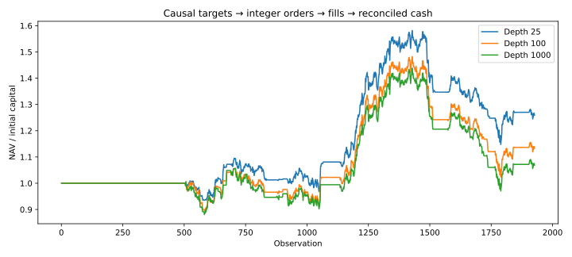
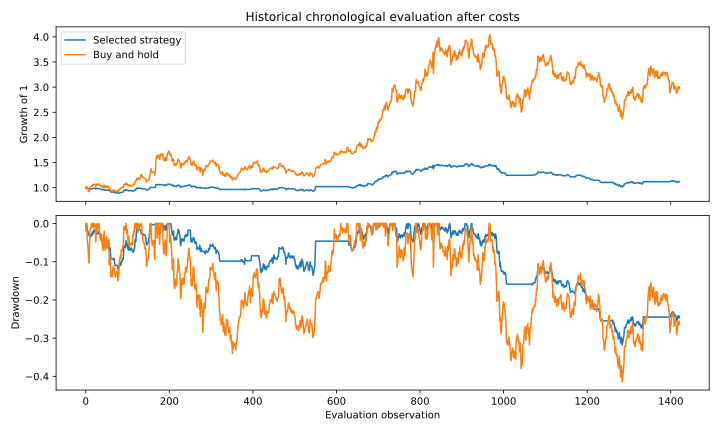
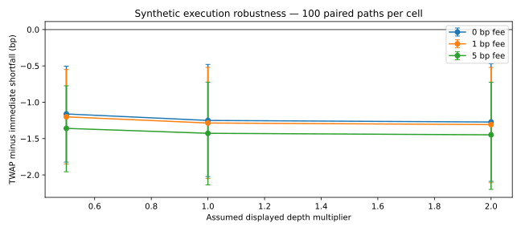

Research dashboard · 24 October 2026 · 40 tests
Systematic Strategies & Execution
Causal selection → target weights → integer orders → FIFO fills → cash reconciliation
Decision and evidence
Combines systematic strategy research with the execution lab. Portfolio targets now become cash-constrained integer orders; IOC fills respect assumed depth, and every trading step reconciles fees, slippage, holdings and cash.
Finding. On the same historical price path, depth assumptions materially change fills and exposure. The 100-unit scenario fills about 49.98% of requested units and returns 13.20% cumulatively after terminal costs. This is a hypothetical execution replay, not observed fill performance.
Research views



Model mechanics
Signals and selection exclude the execution-day close. Orders target floor(weight × pre-trade equity / price). Sells release cash before buys; buys cannot borrow. Wealth after fills = wealth before fills − fees − execution slippage. A separately labelled terminal auction closes positions.
From basic input reconciliation to stress analysis, each step has an auditable calculation trail in the repository.
Boundaries
Depth, spreads and terminal auction capacity are invented scenarios. Better returns under lower liquidity can reflect delayed exposure, not better execution. No calibrated market impact, tax, latency or capacity claims.
Offline research software, not a production trading or asset-management system.
Data and reproducibility
Yahoo Finance adjusted-price cache for DLF, Godrej Properties, Prestige and Oberoi; accessed 24 October 2026. Exact input hash and URLs in result JSON. Depth/spread scenarios are synthetic.
summary.json — exact results and assumptions
{
"source": {
"name": "Yahoo Finance adjusted-close cache; hypothetical execution",
"urls": [
"https://finance.yahoo.com/quote/DLF.NS/history/",
"https://finance.yahoo.com/quote/GODREJPROP.NS/history/",
"https://finance.yahoo.com/quote/PRESTIGE.NS/history/",
"https://finance.yahoo.com/quote/OBEROIRLTY.NS/history/"
],
"access_date": "2026-10-24",
"sha256": "1298ee925e4e8547aec0745f4dbe4f1b961918f1ff47f81d691f28cf18e64ea4"
},
"scenarios": [
{
"depth_units": 25,
"return_after_terminal_cost": 0.25799216230487443,
"filled_units": 46395,
"requested_units": 264912,
"unit_fill_ratio": 0.17513362928066678,
"terminal_cost": 795.2604292296546
},
{
"depth_units": 100,
"return_after_terminal_cost": 0.13203760664194308,
"filled_units": 83481,
"requested_units": 167045,
"unit_fill_ratio": 0.4997515639498339,
"terminal_cost": 714.55613919035
},
{
"depth_units": 1000,
"return_after_terminal_cost": 0.06785997382898068,
"filled_units": 127524,
"requested_units": 128324,
"unit_fill_ratio": 0.9937657803684424,
"terminal_cost": 674.2894656706976
}
],
"folds": 12,
"assumptions": {
"fee_bps": 10,
"half_spread_bps": 5,
"depth_units": [
25,
100,
1000
],
"capital": 1000000
},
"limits": "Synthetic displayed depth, adjusted-close marks, tick rounding and terminal auction capacity. No market impact, latency, empirically observed order book, taxes or trading-size feasibility. Curves are pre-liquidation; reported returns include final liquidation."
}summary.json — exact results and assumptions
{
"dataset": "historical",
"source": {
"name": "Yahoo Finance vendor-adjusted closes; fixed survivor universe",
"links": [
"https://finance.yahoo.com/quote/DLF.NS/history/",
"https://finance.yahoo.com/quote/GODREJPROP.NS/history/",
"https://finance.yahoo.com/quote/PRESTIGE.NS/history/",
"https://finance.yahoo.com/quote/OBEROIRLTY.NS/history/"
],
"access_date": "2026-10-24",
"sha256": "1298ee925e4e8547aec0745f4dbe4f1b961918f1ff47f81d691f28cf18e64ea4"
},
"symbols": [
"DLF.NS",
"GODREJPROP.NS",
"PRESTIGE.NS",
"OBEROIRLTY.NS"
],
"start": "2021-01-18",
"end": "2026-10-19",
"strategy": {
"observations": 1422,
"total_return": 0.11533137409160621,
"cagr": 0.019531607957871566,
"sharpe_zero_rf": 0.23502658139134597,
"max_drawdown": -0.3178188979959282
},
"benchmark": {
"observations": 1422,
"total_return": 1.9724102191487578,
"cagr": 0.21294764662676835,
"sharpe_zero_rf": 0.7816790452848088,
"max_drawdown": -0.41505949939314424
},
"paired_block_bootstrap": {
"annualized_mean_difference": -0.2153804137451321,
"lower_95": -0.402959081784142,
"upper_95": -0.03141984527869797,
"block_length": 20,
"resamples": 1000,
"conditional_on_selected_path": true
},
"folds": [
{
"start": 505,
"stop": 631,
"mode": "trend",
"lookback": 21,
"training_sharpe": 1.1697588762991364
},
{
"start": 631,
"stop": 757,
"mode": "reversion",
"lookback": 21,
"training_sharpe": 0.9201259583022782
},
{
"start": 757,
"stop": 883,
"mode": "trend",
"lookback": 126,
"training_sharpe": 1.0982964729462206
},
{
"start": 883,
"stop": 1009,
"mode": "reversion",
"lookback": 63,
"training_sharpe": 1.417626332134221
},
{
"start": 1009,
"stop": 1135,
"mode": "reversion",
"lookback": 63,
"training_sharpe": 0.5128631473708638
},
{
"start": 1135,
"stop": 1261,
"mode": "momentum",
"lookback": 126,
"training_sharpe": 0.8178146968067884
},
{
"start": 1261,
"stop": 1387,
"mode": "momentum",
"lookback": 126,
"training_sharpe": 1.2679513452615854
},
{
"start": 1387,
"stop": 1513,
"mode": "momentum",
"lookback": 126,
"training_sharpe": 1.8361313302616509
},
{
"start": 1513,
"stop": 1639,
"mode": "trend",
"lookback": 126,
"training_sharpe": 1.6472721322716095
},
{
"start": 1639,
"stop": 1765,
"mode": "trend",
"lookback": 126,
"training_sharpe": 1.2594601065973385
},
{
"start": 1765,
"stop": 1891,
"mode": "reversion",
"lookback": 126,
"training_sharpe": 0.21785527732484275
},
{
"start": 1891,
"stop": 1927,
"mode": "reversion",
"lookback": 126,
"training_sharpe": -0.11360082105019527
}
],
"cost_sensitivity": [
{
"cost_bps": 0,
"observations": 1422,
"total_return": 0.21724415264986452,
"cagr": 0.03545260436494124,
"sharpe_zero_rf": 0.38078871724596663,
"max_drawdown": -0.30004651861455656
},
{
"cost_bps": 5,
"observations": 1422,
"total_return": 0.16517841534940003,
"cagr": 0.02746194909590871,
"sharpe_zero_rf": 0.3079207800232706,
"max_drawdown": -0.30898902495518266
},
{
"cost_bps": 10,
"observations": 1422,
"total_return": 0.11533137409160621,
"cagr": 0.019531607957871566,
"sharpe_zero_rf": 0.23502658139134597,
"max_drawdown": -0.3178188979959282
},
{
"cost_bps": 25,
"observations": 1422,
"total_return": -0.02181973664881487,
"cagr": -0.0039019662796100363,
"sharpe_zero_rf": 0.016396445735330847,
"max_drawdown": -0.3436466157657452
},
{
"cost_bps": 50,
"observations": 1422,
"total_return": -0.21407913923101296,
"cagr": -0.0417925633593168,
"sharpe_zero_rf": -0.3465608418861897,
"max_drawdown": -0.3845673472996862
}
],
"assumptions": {
"train_observations": 504,
"test_observations": 126,
"candidate_rules": 9,
"vol_target": 0.12,
"cost_bps_per_turnover": 10,
"cash_rate": 0,
"long_only": true,
"max_gross": 1,
"signal_lag": "t-2 information, close t-1 execution, t return"
},
"limitations": [
"Retrospective pseudo-OOS, not an unseen live experiment",
"Fixed present-day survivor universe; selection bias",
"Adjusted close execution proxy, no actual fill, impact, taxes or capacity",
"Conditional bootstrap does not correct research-selection bias",
"No guarantee of positive performance"
]
}